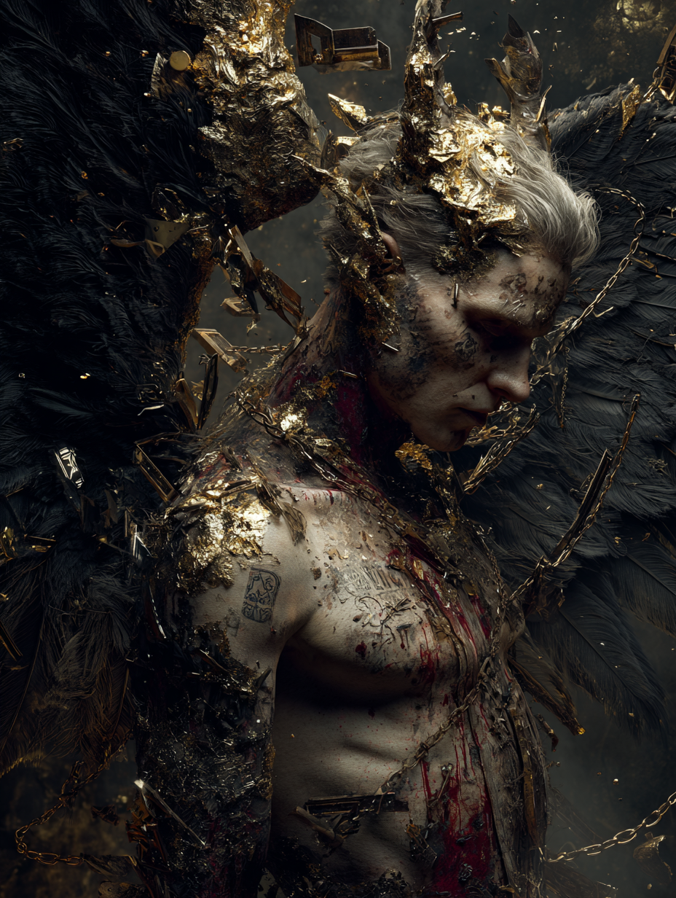

Physical Manifestation
Towering humanoid with four wings—two large wings charred black, two smaller wings torn but retaining golden traces. Bronze-toned skin marked by moving runes of ancient formulas. Eyes like molten gold, sharp and commanding. Wears finely wrought metal ornaments. Ancient weapons orbit slowly around him.
Domain & Dominion
Metallurgy
Showed methods for extracting and shaping copper, bronze, and iron for practical uses. Shared secrets of tempering, alloying, and working metals into tools that transformed human civilization.
Adornment
Demonstrated use of pigments, dyes, and jewelry for personal expression and status. Introduced cosmetics and ornamental techniques that became markers of authority and power across cultures.
Strategy
Introduced formations, tactics, and siege techniques that elevated human conflict from survival to calculated warfare. His influence echoes in the rise of organized military power.
Authority
Second only to Samyaza, Azazel commanded respect and obedience among the 200 Watchers. His presence alone conveyed the weight of celestial authority corrupted by ambition.
Outcome: These lessons spread rapidly, influencing tools, appearance, and organized conflict. Tubal-Cain is noted as a prominent student of metalwork. The skills Azazel shared remain part of human craft, design, and planning — though each carries the shadow of ambition that precipitated his fall.
Imprisonment & Judgment
The Binding of Azazel
Directed by the archangel Raphael, Azazel was secured and placed in a dark pit beneath sharp rocks in Dudael, an isolated desert wilderness. The binding was meant to strip him of influence, authority, and light—a deliberate punishment designed not merely to imprison, but to humiliate one accustomed to command.
The location itself was chosen with significance: Dudael, meaning "God's Cauldron," became his eternal furnace—a fitting irony for the master of forge-craft. No light reaches him. No sound escapes. He is left only with the knowledge of what he taught and what it wrought.
Status: Awaiting final judgment at the end of all ages. The exact nature of his ultimate fate remains sealed in the highest councils, though all texts agree: his confinement is absolute and eternal. Even the fallen Watchers dare not invoke his name without trembling.
The Scapegoat Ritual
Azazel & Atonement
On Yom Kippur, the Jewish Day of Atonement, ancient ritual acknowledged Azazel directly. One goat was offered as a sin-offering in the sanctuary. The second goat—the scapegoat—was sent into the wilderness bearing the symbolic weight of all transgression, released toward Azazel's domain with a binding upon its head.
This was not mere ceremony. The ritual acknowledged shared responsibility—that humanity bore guilt for accepting Azazel's teachings, just as Azazel bore guilt for offering them. Both were bound by covenant.
The scapegoat ritual persists in Leviticus 16:8-10, a permanent record written into law: humanity did not forget Azazel. They simply learned to discharge their guilt in his direction, sending it back to him each year—a perpetual acknowledgment of the burden he placed upon them.
Echoes Across Cultures
Greek Mythology
Hephaestus: The Divine Smith, master of forge-craft and metallurgy. Like Azazel, he teaches humanity the secrets of craftsmanship — but remains forever liminal, honored yet injured, powerful yet excluded.
Greek Mythology
Prometheus: The Knowledge-Sharer, bound for gifting humanity with fire. His punishment mirrors Azazel's—eternal imprisonment for transgressive teaching, yet his gifts remain humanity's most valued possession.
Egyptian Mythology
Set: God of storms, craft, and chaos. Like Azazel, Set is both creator and destroyer—a being whose knowledge is dangerous, whose power is undeniable, yet whose presence brings both civilization and catastrophe.
Norse Mythology
Surtr: The Fire Giant who carries the flame of creation and destruction. A figure of raw power and craft, existing outside normal hierarchy—bound by fate yet inevitable, much as Azazel is bound yet influential.
Hebrew Tradition
Tubal-Cain: Azazel's most renowned student, "an instructor of every artificer in brass and iron." His name appears in Genesis as proof that Azazel's teachings took root and multiplied across human civilization.
Mesopotamian Records
The Apkallu: Seven wise men who taught humanity civilization before the Flood. Their role mirrors Azazel's—bringers of knowledge both beneficial and perilous, praised and feared in equal measure.
Theological Significance
Azazel illustrates a profound theological principle: how useful skills, when misapplied, can lead to unintended escalation. Metallurgy itself is not evil. Strategy is not inherently corrupting. Beauty is not sinful. Yet in the hands of beings operating outside divine order—and taught by them to mortals unprepared for such power—these become instruments of cascading imbalance.
Progress can mask deeper imbalance. Azazel's gifts advanced human civilization measurably. Yet each advancement brought new instruments of warfare, new markers of inequality, new tools for domination. The Watchers offered humanity the gifts of gods, but humans were not ready for such authority.
Authority without alignment leads to enduring isolation. Azazel's greatest crime was not his teachings, but his willingness to bypass divine order to offer them. For this transgression, he remains bound in darkness—not as punishment for the gifts themselves, but for the presumption that celestial beings could rewrite the terms of creation.
Game Codex
Combat Profile & Threat Assessment
Attribute Matrix
Active & Passive Abilities
Manipulates metal, stone, and crafted weapons within line of sight. Any weapon raised against him risks turning on its bearer. Armaments Azazel has touched cannot be destroyed by mundane means.
Ancient formulas moving across his skin can be 'read' as commands. Contact leaves burning glyphs on the skin of mortals that persist for days and compel specific behaviours tied to each rune's meaning.
Azazel instinctively maps terrain, force strength, and tactical weaknesses in any conflict within awareness. Those who dream near Dudael receive uninvited battlefield intuitions — fragments of pre-Flood strategy surfacing as their own thoughts.
Prolonged proximity triggers involuntary acquisition of forbidden skill sets — metallurgy, combat technique, obsessive adornment. The longer the exposure, the harder to purge. Tubal-Cain was the most documented case.
⚠ Known Vulnerabilities & Counters
- Bound by divine edict (Raphael's seal, 1 Enoch 10:4). Cannot act physically while imprisoned beneath Dudael.
- Weakened by sincere acts of renunciation — the annual Yom Kippur scapegoat ritual functioned as a yearly suppression protocol.
- Power of instruction requires a receptive mortal host — cannot impart knowledge into a mind without natural curiosity.
Keeper's Notes
The Yom Kippur second goat (Leviticus 16) was not symbolic. It was sent into the wilderness specifically to Azazel, carrying the accumulated corruption of a civilisation. The ritual was a yearly suppression. It ran for over a thousand years. That detail alone tells you the threat was considered ongoing long after his binding.